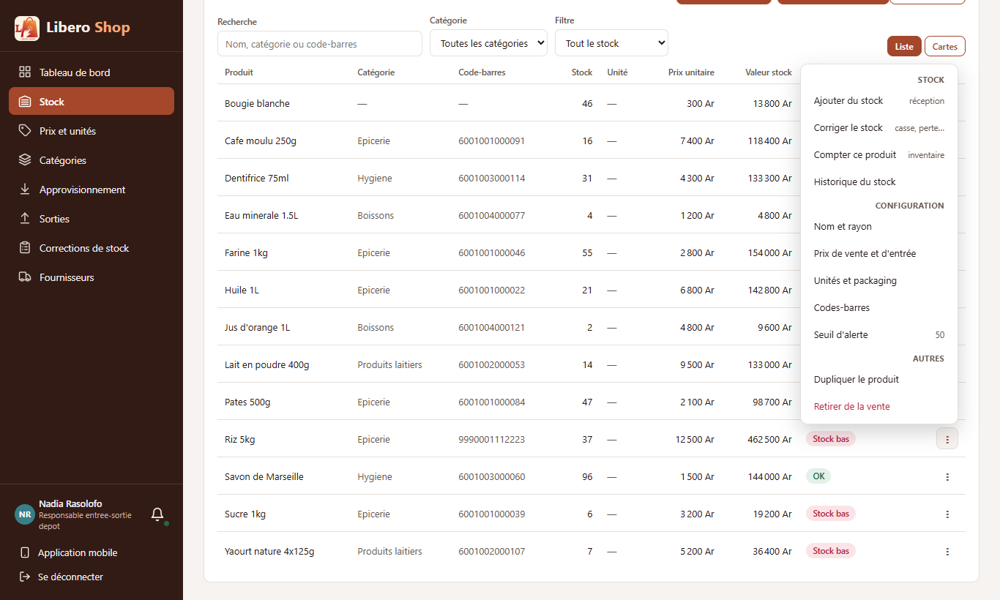
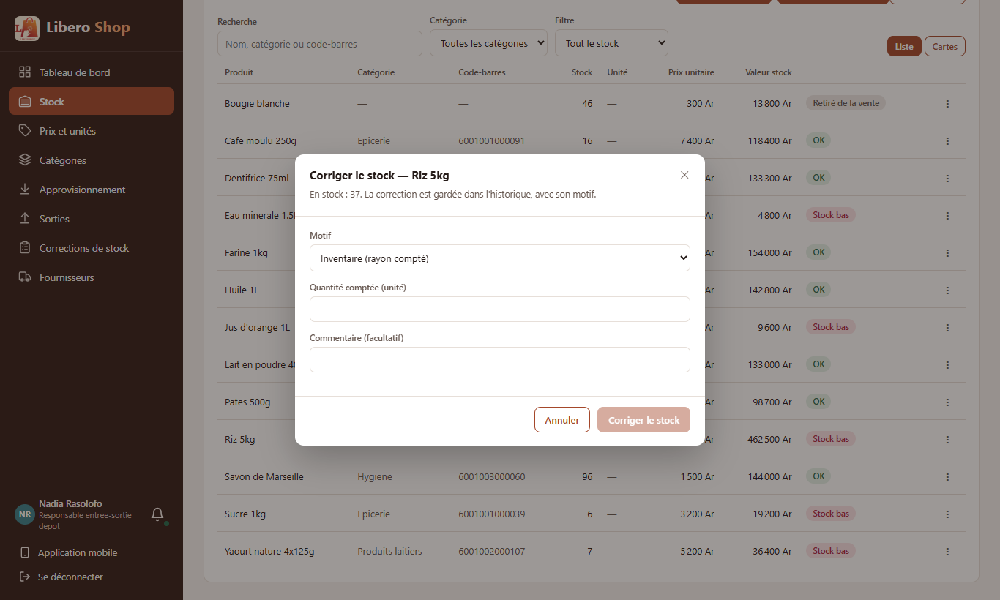
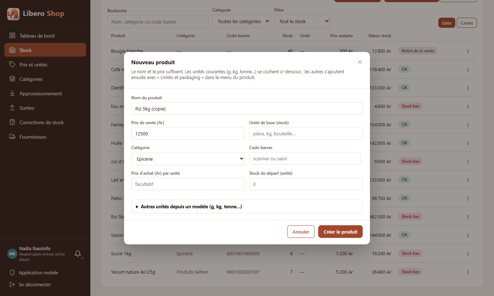
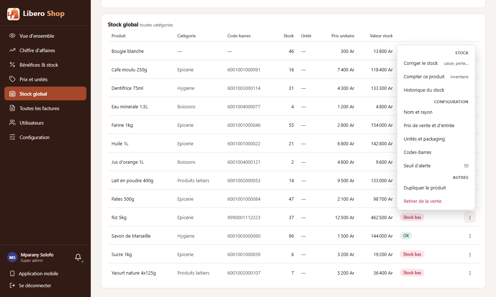
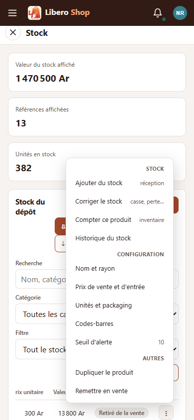

← Tous les comptes rendus de l'interface
UI-02Menu produit complet, rangé par familles
- Le menu « ⋮ » d'un produit passe de 4 à 11 entrées, rangées sous trois petits titres : Stock, Configuration, Autres.
- Chaque entrée ouvre directement la bonne fenêtre : « Prix de vente et d'entrée » ouvre la configuration sur l'onglet Prix, « Seuil d'alerte » met le curseur dans le seuil.
- Nouveaux gestes : Compter ce produit (correction de type inventaire), Dupliquer le produit (nouvelle fiche préremplie), Retirer de la vente / Remettre en vente.
- Un petit texte gris à droite dit ce que fait l'entrée, ou la valeur actuelle (le seuil d'alerte).
- Le rôle retire ce qu'il ne peut pas faire, comme avant ; un caissier n'a toujours pas de menu.
1. Le problème
Le menu n'avait que quatre entrées, dont « Configurer (prix, unités) » qui ouvrait tout d'un coup. Compter un produit, le dupliquer ou le retirer de la vente n'étaient pas possibles depuis la liste.
2. Ce qui a été fait
La liste des entrées et ce que chacune ouvre sont écrits dans un seul fichier (core/catalog/product-menu.ts),
testé à part. Le menu générique de l'application (app-action-menu) sait maintenant afficher des titres de
famille et un petit texte à droite, et défiler sur lui-même s'il est plus haut que l'écran.
3. Le résultat en images
Nadia — responsable de dépôt



Mparany — administrateur Pas « Ajouter du stock » (réservé au responsable de dépôt).


4. Ce qui n'est pas fait
- Imprimer une étiquette : notée comme « idée » dans la liste ; elle demande de choisir un format d'étiquette et une imprimante.
- Dupliquer ne recopie pas les unités du produit (sac, carton) : elles s'ajoutent ensuite par « Unités et packaging ». Les recopier demanderait une création d'unités en une fois côté serveur.
5. Tableau récapitulatif
| Fichier | Changement |
|---|---|
ui/…/core/catalog/product-menu.ts | nouveau : les entrées par famille et la fenêtre de chacune |
ui/…/core/catalog/product-rights.ts | les droits regroupés pour le menu ; demandes « copie », « comptage », « retrait » |
ui/…/shared/components/action-menu.component.ts | titres de famille, petit texte à droite, défilement interne |
ui/…/shared/components/product-menu.component.ts | utilise le nouveau menu |
ui/…/shared/components/product-dialogs.component.ts | retrait / remise en vente avec confirmation ; copie ; comptage |
ui/…/shared/components/product-create-dialog.component.ts | fiche préremplie depuis un autre produit |
ui/…/shared/components/stock-adjust-dialog.component.ts | motif de départ choisi par l'entrée |
ui/…/shared/components/product-units-dialog.component.ts | curseur dans le seuil depuis « Seuil d'alerte » |
| Règle | Test |
|---|---|
| Onze entrées, trois familles, dans l'ordre ; l'administrateur sans réception ; aucun menu au caissier | product-menu.component.spec.ts |
| Le seuil du produit affiché à droite ; un produit retiré propose « Remettre en vente » | idem |
| Chaque entrée ouvre la bonne fenêtre (onglet, comptage, copie, seuil) | product-menu.spec.ts, product-menu.component.spec.ts |
| Seul le retrait est en rouge | product-menu.spec.ts |
Tests : interface au vert (245 tests). Le serveur a été complété avant ce point : seuil par produit (compte rendu 41) et retrait de la vente (compte rendu 42).